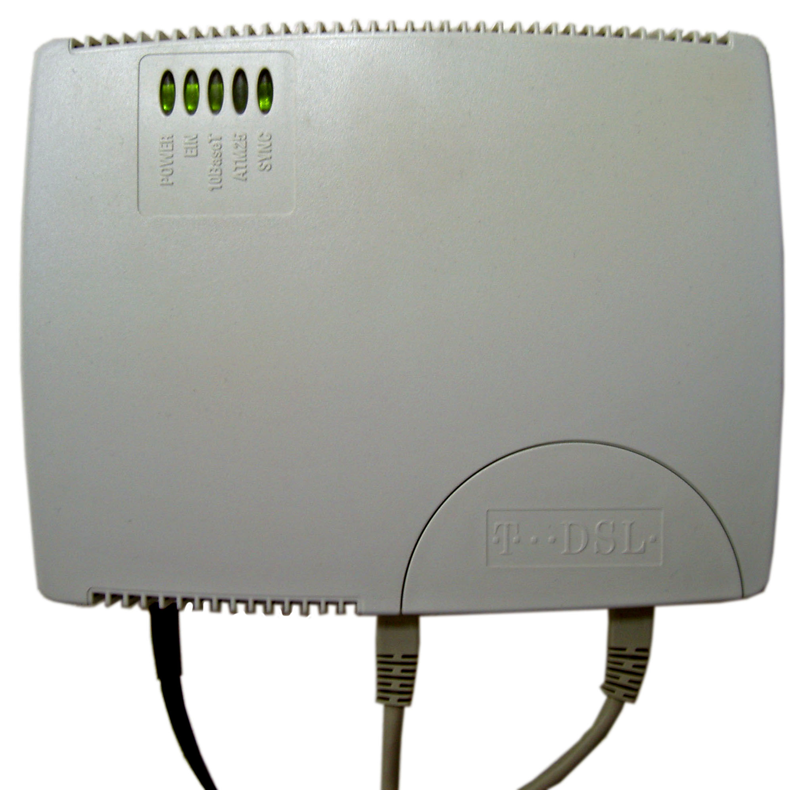
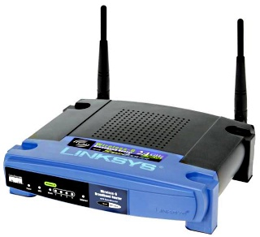
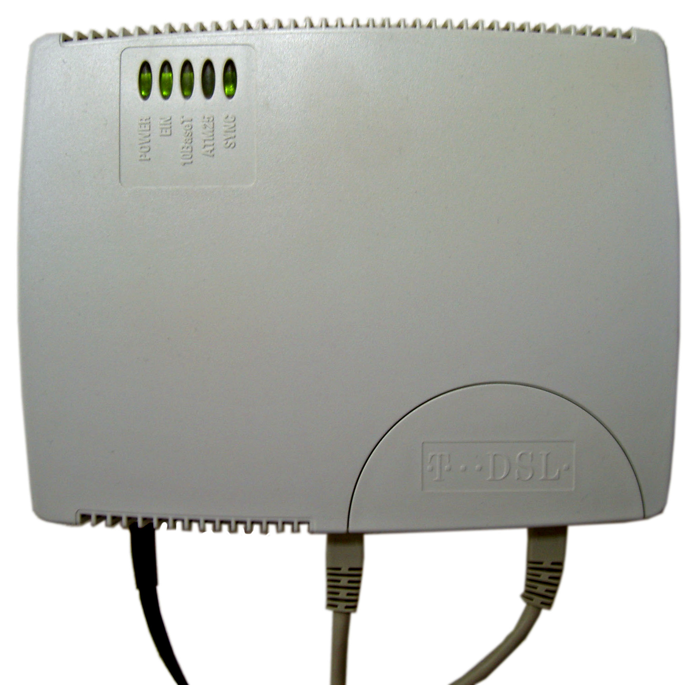
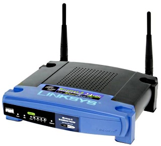

Application layer
The Application layer consists of the protocols programs use to communicate with other programs in a network, as opposed to lower-level protocols that manage the actual transfer of the data itself. Some commonly used protocols are HTTP, FTP, and SMTP.
HTTP example
Request
GET /widgets.html HTTP/1.1
Host: bobswidgets.comResponse
HTTP/1.1 200 OK
Date: Mon, 23 May 2005 22:38:34 GMT
Server: Apache/1.3.3.7 (Unix) (Red-Hat/Linux)
Last-Modified: Wed, 08 Jan 2003 23:11:55 GMT
Content-Length: 438
Content-Type: text/html; charset=UTF-8
[Response data such as HTML goes here, ommited for space and
because I'm too lazy to write a fake web page]Presentation layer
The presentation layer is used to modify information being passed through the stack. For example, it may compress or encrypt a web page before sending it to the server. HTTP gzip compression and TLS are often used for these purposes on the web.
Encrypting a web page

Session layer
The session layer is used to maintain a continuous dialog between two computers. For example, streaming video from the internet with NetFlix, a videochat application, or an online game all require one or more constant streams of data, and a protocol in the session layer manages the connection. The session layer is not typically used for normal web browsing, though a handful of websites make use of SPDY to speed load times.

Transport layer
Protocols in the transport layer control how machines talk to each other. They may ensure all the sent information was recieved, that it arrived in the correct order, or that one machine is not sending data faster than the other computer can read it. By far the most commonly used example of this layer is TCP; UDP is also often used where speed or simplicity is more important than data integrity.
TCP Header Diagram

Network layer
The network layer is concerned with how data gets from a computer to its destination. It deals with addressing and routing - where a computer is on the network and how to reach it through the various routers and other equipment involved.
The vast majority of networks make use of IPv4 for this purpose, and this is the layer where IP addresses are used. IPv6 is an improved version of IPv4 with near limitless potential addresses and will eventually replace IPv4.
IPv4 Header Diagram

Data link layer
The data link layer manages direct communication between individual devices, such as a computer and a switch. It often goes hand-in-hand with the physical layer, and can be seen as the software half of the two layers.
MAC addressses are assigned and used at this layer.
Physical layer
As the name implies, the physical layer represents the hardware all the other layers must ultimately use to communicate. Standards in this layer describe connecters, wires, voltages and radio frequencies, and other hardware details. It deals only with raw binary data; the other layers built on top of it are responsible for giving meaning to that data.
Examples
- Ethernet, Wi-Fi
- Cable or DSL modem
- Dialup modem
 



Further reading
- Wikipedia page about the OSI model
- Various protocols & standards